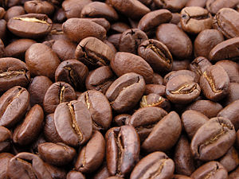

Elementos Gráficos
A aula sobre elementos gráficos, apresentou algumas das diversas possibilidades de estilizar imagens e gráficos, utilizando linguagem de programação html e css, conforme você pode ver abaixo:

Exercício Módulo 8
Escola Britânica de Artes Criativas e Tecnologia
A aula sobre elementos gráficos, apresentou algumas das diversas possibilidades de estilizar imagens e gráficos, utilizando linguagem de programação html e css, conforme você pode ver abaixo: